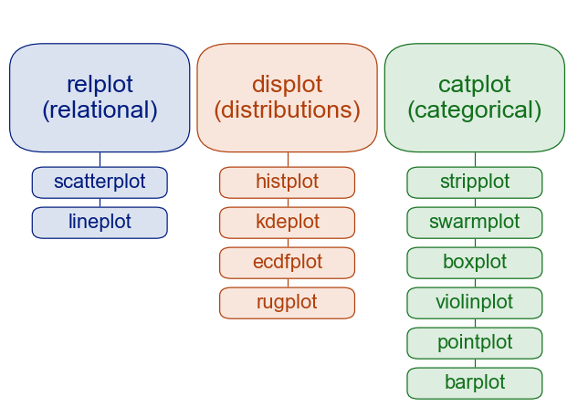

Data Visualization I#
Preparing Datasets#
import matplotlib.pyplot as plt
import numpy as np
import pandas as pd
import matplotlib
# Make a data frame
df=pd.DataFrame({'x': range(1,11), 'y1': np.random.randn(10), 'y2': np.random.randn(10)+range(1,11), 'y3': np.random.randn(10)+range(11,21), 'y4': np.random.randn(10)+range(6,16), 'y5': np.random.randn(10)+range(4,14)+(0,0,0,0,0,0,0,-3,-8,-6), 'y6': np.random.randn(10)+range(2,12), 'y7': np.random.randn(10)+range(5,15), 'y8': np.random.randn(10)+range(4,14), 'y9': np.random.randn(10)+range(4,14), 'y10': np.random.randn(10)+range(2,12) })
df['x']=pd.Categorical(df['x'])
print(df.dtypes)
df.head(10)
x category
y1 float64
y2 float64
y3 float64
y4 float64
y5 float64
y6 float64
y7 float64
y8 float64
y9 float64
y10 float64
dtype: object
| x | y1 | y2 | y3 | y4 | y5 | y6 | y7 | y8 | y9 | y10 | |
|---|---|---|---|---|---|---|---|---|---|---|---|
| 0 | 1 | 0.953949 | 2.878138 | 8.866186 | 7.169483 | 4.894806 | 1.383657 | 5.207700 | 2.749603 | 3.777047 | 4.338875 |
| 1 | 2 | 0.148130 | 2.182593 | 11.399598 | 5.671996 | 5.013517 | 2.503236 | 5.270997 | 3.332785 | 4.707431 | 3.470963 |
| 2 | 3 | 0.401601 | 3.342006 | 12.787722 | 7.898548 | 6.005761 | 5.079653 | 7.948136 | 7.321007 | 5.849269 | 3.589841 |
| 3 | 4 | 1.325920 | 4.496024 | 15.672599 | 9.664751 | 6.800054 | 3.797002 | 8.461314 | 7.364939 | 7.597704 | 4.230760 |
| 4 | 5 | 0.045468 | 4.553081 | 14.898799 | 10.109224 | 6.771789 | 6.317487 | 9.446912 | 9.109398 | 7.054921 | 5.494813 |
| 5 | 6 | 0.385796 | 6.015589 | 15.090889 | 10.442972 | 9.406430 | 5.064227 | 10.006732 | 6.563899 | 12.320422 | 7.353816 |
| 6 | 7 | 0.316242 | 5.671259 | 17.911464 | 11.287174 | 9.375809 | 7.951598 | 9.014010 | 11.649927 | 11.138327 | 7.948010 |
| 7 | 8 | 1.639019 | 7.694177 | 19.323432 | 12.289224 | 7.487505 | 8.626360 | 12.696997 | 11.324753 | 9.214215 | 8.570674 |
| 8 | 9 | -0.886327 | 10.187601 | 18.373330 | 14.499094 | 4.679189 | 10.825828 | 13.044199 | 10.468501 | 11.931833 | 9.631274 |
| 9 | 10 | -0.261461 | 8.573481 | 19.369957 | 13.711514 | 7.270583 | 11.427754 | 13.084936 | 13.267057 | 13.893086 | 11.912090 |
Matlibplot#
Resolution#
We can increase the dpi of the matplotlib parameters to get image of higher resolution in notebook
The dpi setting has to GO before the magic inline command because the magic inline commened resets the dpi to default
## Change DPI for higher resolution in notebook
%matplotlib inline
matplotlib.rcParams['figure.dpi'] = 150
matplotlib.rcParams['savefig.dpi'] = 150
# Change DPI when saving graphs in files
# matplotlib.rc("savefig", dpi=dpi)
Matplotlib Style#
# available style
print(plt.style.available)
['Solarize_Light2', '_classic_test_patch', 'bmh', 'classic', 'dark_background', 'fast', 'fivethirtyeight', 'ggplot', 'grayscale', 'seaborn', 'seaborn-bright', 'seaborn-colorblind', 'seaborn-dark', 'seaborn-dark-palette', 'seaborn-darkgrid', 'seaborn-deep', 'seaborn-muted', 'seaborn-notebook', 'seaborn-paper', 'seaborn-pastel', 'seaborn-poster', 'seaborn-talk', 'seaborn-ticks', 'seaborn-white', 'seaborn-whitegrid', 'tableau-colorblind10']
# choose one style
plt.style.use('fivethirtyeight')
Matplotlib Chinese Issues#
## Setting Chinese Fonts
## Permanent Setting Version
plt.rcParams['font.sans-serif']=["PingFang HK"]
plt.rcParams['axes.unicode_minus']= False
Plotting#
## Simple X and Y
plt.plot(df['x'], df['y1'])
plt.show()
## Simple X and two Y's
plt.plot(df['x'], df['y1'])
plt.plot(df['x'], df['y2'])
plt.show()
## Adding legends
## Simple X and two Y's
plt.plot(df['x'], df['y1'], label="資料1")
plt.plot(df['x'], df['y2'], label="資料2")
plt.legend()
plt.tight_layout()
plt.show()

## Save graphs
## Simple X and two Y's
plt.plot(df['x'], df['y1'], label="資料1")
plt.plot(df['x'], df['y2'], label="資料2")
plt.legend()
plt.tight_layout()
plt.savefig('plot.png')
plt.show()
## Add x/y labels and title
## Simple X and two Y's
plt.plot(df['x'], df['y1'], label="資料1")
plt.plot(df['x'], df['y2'], label="資料2")
plt.legend()
plt.xlabel("X軸")
plt.ylabel("Y軸")
plt.title("漂亮的圖")
plt.tight_layout()
plt.show()
Bar Plots#
## Normal bar plot
plt.bar(df['x'], df['y3'])
plt.show()
## Sort bars according to values
df_sorted = df.sort_values(['y3','y2'], ascending=True)
print(df_sorted.dtypes)
df_sorted
x category
y1 float64
y2 float64
y3 float64
y4 float64
y5 float64
y6 float64
y7 float64
y8 float64
y9 float64
y10 float64
dtype: object
| x | y1 | y2 | y3 | y4 | y5 | y6 | y7 | y8 | y9 | y10 | |
|---|---|---|---|---|---|---|---|---|---|---|---|
| 0 | 1 | 0.953949 | 2.878138 | 8.866186 | 7.169483 | 4.894806 | 1.383657 | 5.207700 | 2.749603 | 3.777047 | 4.338875 |
| 1 | 2 | 0.148130 | 2.182593 | 11.399598 | 5.671996 | 5.013517 | 2.503236 | 5.270997 | 3.332785 | 4.707431 | 3.470963 |
| 2 | 3 | 0.401601 | 3.342006 | 12.787722 | 7.898548 | 6.005761 | 5.079653 | 7.948136 | 7.321007 | 5.849269 | 3.589841 |
| 4 | 5 | 0.045468 | 4.553081 | 14.898799 | 10.109224 | 6.771789 | 6.317487 | 9.446912 | 9.109398 | 7.054921 | 5.494813 |
| 5 | 6 | 0.385796 | 6.015589 | 15.090889 | 10.442972 | 9.406430 | 5.064227 | 10.006732 | 6.563899 | 12.320422 | 7.353816 |
| 3 | 4 | 1.325920 | 4.496024 | 15.672599 | 9.664751 | 6.800054 | 3.797002 | 8.461314 | 7.364939 | 7.597704 | 4.230760 |
| 6 | 7 | 0.316242 | 5.671259 | 17.911464 | 11.287174 | 9.375809 | 7.951598 | 9.014010 | 11.649927 | 11.138327 | 7.948010 |
| 8 | 9 | -0.886327 | 10.187601 | 18.373330 | 14.499094 | 4.679189 | 10.825828 | 13.044199 | 10.468501 | 11.931833 | 9.631274 |
| 7 | 8 | 1.639019 | 7.694177 | 19.323432 | 12.289224 | 7.487505 | 8.626360 | 12.696997 | 11.324753 | 9.214215 | 8.570674 |
| 9 | 10 | -0.261461 | 8.573481 | 19.369957 | 13.711514 | 7.270583 | 11.427754 | 13.084936 | 13.267057 | 13.893086 | 11.912090 |
plt.bar('x', 'y3', data=df_sorted)
plt.show()
## Horizontal Bars
plt.bar('x', 'y4', data=df.sort_values('y4'))
plt.tight_layout()
plt.show()
Pie Chart#
plt.style.use("fivethirtyeight")
slices = [20, 30, 30, 20]
labels = ['Attendance', 'Midterm', 'Final', 'Assignments']
explode = [0, 0, 0.1, 0]
plt.pie(slices, labels=labels, explode=explode, shadow=True,
startangle=90, autopct='%1.1f%%',
wedgeprops={'edgecolor': 'black'})
plt.title("Grading Policy")
plt.tight_layout()
plt.show()
Stacked Plot#
plt.style.use("fivethirtyeight")
minutes = [1, 2, 3, 4, 5, 6, 7, 8, 9]
player1 = [1, 2, 3, 3, 4, 4, 4, 4, 5]
player2 = [1, 1, 1, 1, 2, 2, 2, 3, 4]
player3 = [1, 1, 1, 2, 2, 2, 3, 3, 3]
labels = ['player1', 'player2', 'player3']
colors = ['#6d904f', '#fc4f30', '#008fd5']
plt.stackplot(minutes, player1, player2, player3, labels=labels, colors=colors)
plt.legend(loc='upper left')
plt.title("Stacked Plot")
plt.tight_layout()
plt.show()
Histogram#
import random
import numpy as np
# grades = [random.randint(0,100) for i in range(1000)]
grades = np.random.normal(85, 13, 10000)
#bins = [50, 60, 70, 80, 90,100]
plt.hist(grades, bins= 50,edgecolor='black')
reference_line = np.mean(grades)
color = '#fc4f30'
plt.axvline(reference_line, color=color, label='Mean Score', linewidth=2)
plt.legend()
plt.title('Histogram')
plt.xlabel('Student Grades')
plt.ylabel('個數')
plt.tight_layout()
plt.show()
Scatter Plot#
plt.figure(figsize=(7,5), dpi=300)
plt.scatter(df['y4'], df['y5'], c=df['y6'], s=df['y6']*100,cmap='summer',
edgecolor='black', linewidth=1, alpha=0.75)
cbar = plt.colorbar()
cbar.set_label('Y6數值大小')
# plt.xscale('log')
# plt.yscale('log')
plt.title('3D Scatterplot')
plt.xlabel('Y1')
plt.ylabel('Y2')
plt.ylim((0,13))
plt.show()
Complex Graphs#
df
| x | y1 | y2 | y3 | y4 | y5 | y6 | y7 | y8 | y9 | y10 | |
|---|---|---|---|---|---|---|---|---|---|---|---|
| 0 | 1 | 0.953949 | 2.878138 | 8.866186 | 7.169483 | 4.894806 | 1.383657 | 5.207700 | 2.749603 | 3.777047 | 4.338875 |
| 1 | 2 | 0.148130 | 2.182593 | 11.399598 | 5.671996 | 5.013517 | 2.503236 | 5.270997 | 3.332785 | 4.707431 | 3.470963 |
| 2 | 3 | 0.401601 | 3.342006 | 12.787722 | 7.898548 | 6.005761 | 5.079653 | 7.948136 | 7.321007 | 5.849269 | 3.589841 |
| 3 | 4 | 1.325920 | 4.496024 | 15.672599 | 9.664751 | 6.800054 | 3.797002 | 8.461314 | 7.364939 | 7.597704 | 4.230760 |
| 4 | 5 | 0.045468 | 4.553081 | 14.898799 | 10.109224 | 6.771789 | 6.317487 | 9.446912 | 9.109398 | 7.054921 | 5.494813 |
| 5 | 6 | 0.385796 | 6.015589 | 15.090889 | 10.442972 | 9.406430 | 5.064227 | 10.006732 | 6.563899 | 12.320422 | 7.353816 |
| 6 | 7 | 0.316242 | 5.671259 | 17.911464 | 11.287174 | 9.375809 | 7.951598 | 9.014010 | 11.649927 | 11.138327 | 7.948010 |
| 7 | 8 | 1.639019 | 7.694177 | 19.323432 | 12.289224 | 7.487505 | 8.626360 | 12.696997 | 11.324753 | 9.214215 | 8.570674 |
| 8 | 9 | -0.886327 | 10.187601 | 18.373330 | 14.499094 | 4.679189 | 10.825828 | 13.044199 | 10.468501 | 11.931833 | 9.631274 |
| 9 | 10 | -0.261461 | 8.573481 | 19.369957 | 13.711514 | 7.270583 | 11.427754 | 13.084936 | 13.267057 | 13.893086 | 11.912090 |
# create a color palette
palette = plt.get_cmap('Set1')
# multiple line plot
num=0
#plt.figure(figsize=(5,3), dpi=150)
for column in df.drop(['x','y10'], axis=1):
num+=1
plt.plot(df['x'], df[column], marker='', color=palette(num), linewidth=1, alpha=0.9, label=column)
plt.legend(loc=2, ncol=2)
# Add titles
plt.title("Line Plot With Several Values", loc='left', fontsize=12, fontweight=0, color='orange')
plt.xlabel("Time")
plt.ylabel("Score")
Text(0, 0.5, 'Score')
import matplotlib.pyplot as plt
plt.style.use('ggplot')
df_columns = df.drop(['x','y1'], axis=1).columns
palette = plt.get_cmap('tab20')
num=0
fig, ax = plt.subplots(nrows=3, ncols=3, sharex=True, sharey=True, figsize=(8, 6), dpi=100)
for row in range(3):
for col in range(3):
ax[row,col].plot(df['x'],df[df_columns[num]],color=palette(num), linewidth=1.9, alpha=0.9, label=df_columns[num])
ax[row,col].set_title(df_columns[num],loc='left', fontsize=14,color=palette(num))
num+=1
fig.suptitle("Facet Grids", fontsize=14, fontweight=0, color='black', style='italic', y=1.02)
fig.text(0.5, 0.0, 'Common X', ha='center', fontsize=14)
fig.text(0.0, 0.5, 'Common Y', va='center', rotation='vertical', fontsize=14)
Text(0.0, 0.5, 'Common Y')
Seaborn Module#

Two Types of Functions#
Figure-level functions (Generic)
Axex-level functions (Specific)
## Change the DPI
import seaborn as sns
sns.set(rc={"figure.dpi":300, 'savefig.dpi':300})
sns.set_context('notebook')
sns.set_style("ticks")
sns.set(style='darkgrid')
penguins = sns.load_dataset('penguins')
penguins.head()
| species | island | bill_length_mm | bill_depth_mm | flipper_length_mm | body_mass_g | sex | |
|---|---|---|---|---|---|---|---|
| 0 | Adelie | Torgersen | 39.1 | 18.7 | 181.0 | 3750.0 | Male |
| 1 | Adelie | Torgersen | 39.5 | 17.4 | 186.0 | 3800.0 | Female |
| 2 | Adelie | Torgersen | 40.3 | 18.0 | 195.0 | 3250.0 | Female |
| 3 | Adelie | Torgersen | NaN | NaN | NaN | NaN | NaN |
| 4 | Adelie | Torgersen | 36.7 | 19.3 | 193.0 | 3450.0 | Female |
# histogram
print(sns.__version__) # seaborn>=0.11.0
sns.displot(data=penguins, x="flipper_length_mm", hue="species", multiple="stack")
0.11.0
<seaborn.axisgrid.FacetGrid at 0x7fb050c132e8>
sns.displot(data=penguins, x="flipper_length_mm", hue="species", multiple="stack")
<seaborn.axisgrid.FacetGrid at 0x7fb040877860>
sns.displot(data=penguins, x="flipper_length_mm", hue="species", col="species")
<seaborn.axisgrid.FacetGrid at 0x7fb050bf5eb8>
## kernel density plot
sns.kdeplot(data=penguins, x='flipper_length_mm', hue='species', multiple="stack")
<AxesSubplot:xlabel='flipper_length_mm', ylabel='Density'>

sns.displot(data=penguins, x="flipper_length_mm", hue="species", multiple="stack", kind="kde")
<seaborn.axisgrid.FacetGrid at 0x7fb050a358d0>
tips = sns.load_dataset("tips")
g = sns.relplot(data=tips, x="total_bill", y="tip")
g.ax.axline(xy1=(10,2), slope=.2, color="b", dashes=(5,2))
<matplotlib.lines._AxLine at 0x7fb032fe64e0>
g = sns.relplot(data=penguins, x="flipper_length_mm", y="bill_length_mm", col="sex")
g.set_axis_labels("Flipper length (mm)", "Bill length (mm)")
<seaborn.axisgrid.FacetGrid at 0x7fb0209e5c50>
sns.catplot(data=penguins, x='species', y='flipper_length_mm', kind="box")
<seaborn.axisgrid.FacetGrid at 0x7fb032f99198>
jointplot(): plots the relationship or joint distribution of two variables while adding marginal axes that show the univariate distribution of each one separately
sns.jointplot(data=penguins, x="flipper_length_mm", y="bill_length_mm", hue="species")
<seaborn.axisgrid.JointGrid at 0x7fb020a01710>
pairplot(): visualizes every pairwise combination of variables simultaneously in a data frame
sns.pairplot(data=penguins, hue="species")
<seaborn.axisgrid.PairGrid at 0x7fb0408cb2b0>
Long-format vs. Wide-format Data#
flights = sns.load_dataset("flights")
flights.head()
| year | month | passengers | |
|---|---|---|---|
| 0 | 1949 | Jan | 112 |
| 1 | 1949 | Feb | 118 |
| 2 | 1949 | Mar | 132 |
| 3 | 1949 | Apr | 129 |
| 4 | 1949 | May | 121 |
sns.relplot(data=flights, x="year", y="passengers", hue="month", kind="line")
<seaborn.axisgrid.FacetGrid at 0x7fb032dd7630>
sns.relplot(data=flights, x="month", y="passengers", hue="year", kind="line")
<seaborn.axisgrid.FacetGrid at 0x7fb040fe3438>
flights_wide = flights.pivot(index="year", columns="month", values="passengers")
flights_wide.head()
| month | Jan | Feb | Mar | Apr | May | Jun | Jul | Aug | Sep | Oct | Nov | Dec |
|---|---|---|---|---|---|---|---|---|---|---|---|---|
| year | ||||||||||||
| 1949 | 112 | 118 | 132 | 129 | 121 | 135 | 148 | 148 | 136 | 119 | 104 | 118 |
| 1950 | 115 | 126 | 141 | 135 | 125 | 149 | 170 | 170 | 158 | 133 | 114 | 140 |
| 1951 | 145 | 150 | 178 | 163 | 172 | 178 | 199 | 199 | 184 | 162 | 146 | 166 |
| 1952 | 171 | 180 | 193 | 181 | 183 | 218 | 230 | 242 | 209 | 191 | 172 | 194 |
| 1953 | 196 | 196 | 236 | 235 | 229 | 243 | 264 | 272 | 237 | 211 | 180 | 201 |
print(type(flights_wide))
<class 'pandas.core.frame.DataFrame'>
sns.catplot(data=flights_wide, kind="box")
<seaborn.axisgrid.FacetGrid at 0x7fb040fc6be0>
Chinese Fonts Issues#
Find system-compatible Chinese fonts using the terminal command:
!fc-list :lang=zh
Define the font to be used as well as the font properties in Python:
from matplotlib import rcParams
from matplotlib.font_manager import FontProperties
import matplotlib.pyplot as plt
# rcParams['axes.unicode_minus']=False
myfont = FontProperties(fname='/Library/Fonts/Songti.ttc',
size=15)
plt.title('圖表標題', fontproperties=myfont)
plt.ylabel('Y軸標題', fontproperties=myfont)
plt.legend(('分類一', '分類二', '分類三'), loc='best', prop=myfont)
For a permanent solution, please read references.
Modify the setting file in matplotlib:
matplotlib.matplotlib_fname()to get the file pathIt’s similar to:
/Users/YOUR_NAME/opt/anaconda3/lib/python3.7/site-packages/matplotlib/mpl-data/matplotlibrcTwo important parameters:
font.familyandfont.serifAdd the font name under
font.serif. My case:Source Han Sans
## One can set the font preference permanently
## in the setting file
import matplotlib
matplotlib.matplotlib_fname()
'/Users/Alvin/opt/anaconda3/envs/python-notes/lib/python3.7/site-packages/matplotlib/mpl-data/matplotlibrc'
from matplotlib import rcParams
from matplotlib.font_manager import FontProperties
import matplotlib.pyplot as plt
# rcParams['axes.unicode_minus']=False
#/Users/alvinchen/Library/Fonts/SourceHanSans.ttc
#'/System/Library/Fonts/PingFang.ttc'
def getChineseFont(size=15):
return FontProperties(fname='/Users/Alvin/Library/Fonts/SourceHanSans.ttc',size=size)
print(getChineseFont().get_name())
plt.title('圖表標題', fontproperties=getChineseFont(20))
plt.ylabel('Y軸標題', fontproperties=getChineseFont(12))
plt.legend(('分類一', '分類二', '分類三'), loc='best', prop=getChineseFont())
Source Han Sans
<matplotlib.legend.Legend at 0x7fb033c97588>
## Permanent Setting Version
plt.rcParams['font.sans-serif']=["PingFang HK"]
plt.rcParams['axes.unicode_minus']= False
plt.plot((2,4,6), (3,5,7))
plt.title("中文標題")
plt.ylabel("y軸標題")
plt.xlabel("x軸標題")
plt.show()
## Seaborn
sns.set(font=['san-serif'])
sns.set_style("whitegrid",{"font.sans-serif":["PingFang HK"]})
cities_counter = [('好棒', 285), ('給我', 225), ('不要', 163), ('細柔', 136), ('吃飯', 130), ('小小', 124), ('深圳', 88), ('溫州', 67), ('小知', 66), ('大之', 45)]
sns.set_color_codes("pastel")
sns.barplot(x=[k for k, _ in cities_counter[:10]], y=[v for _, v in cities_counter[:10]])
<AxesSubplot:>
References#
Requirements#
seaborn==0.11.0
pandas==1.1.2
numpy==1.18.1
matplotlib==3.3.2